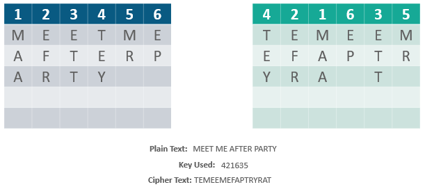
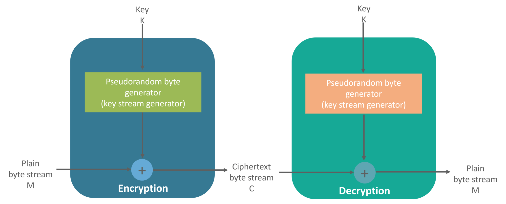
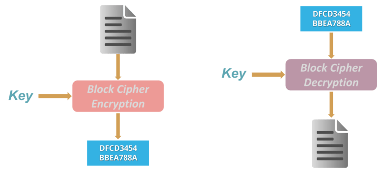

An encryption system in which the sender and receiver of a message share a single, common key that is used to encrypt and decrypt the message. The most popular symmetric–key system is the Data Encryption Standard (DES).

| Transposition Ciphers | Substitution Cipher |
|---|---|
|
In Cryptography, a transposition cipher is a method of encryption by which the positions held by units of plaintext (which are commonly characters or groups of characters) are shifted according to a regular system, so that the ciphertext constitutes a permutation of the plaintext. |
Method of encryption by which units of plaintext are replaced with ciphertext, according to a fixed system; the “units” may be single letters (the most common), pairs of letters, triplets of letters, mixtures of the above, and so forth. |
|  |
| Stream Cipher | Block Cipher |
|---|---|
|
Symmetric or secret-key encryption algorithm that encrypts a single bit at a time. With a Stream Cipher, the same plaintext bit or byte will encrypt to a different bit or byte every time it is encrypted. |
An encryption method that applies a deterministic algorithm along with a symmetric key to encrypt a block of text, rather than encrypting one bit at a time as in stream ciphers. |
| > | > |